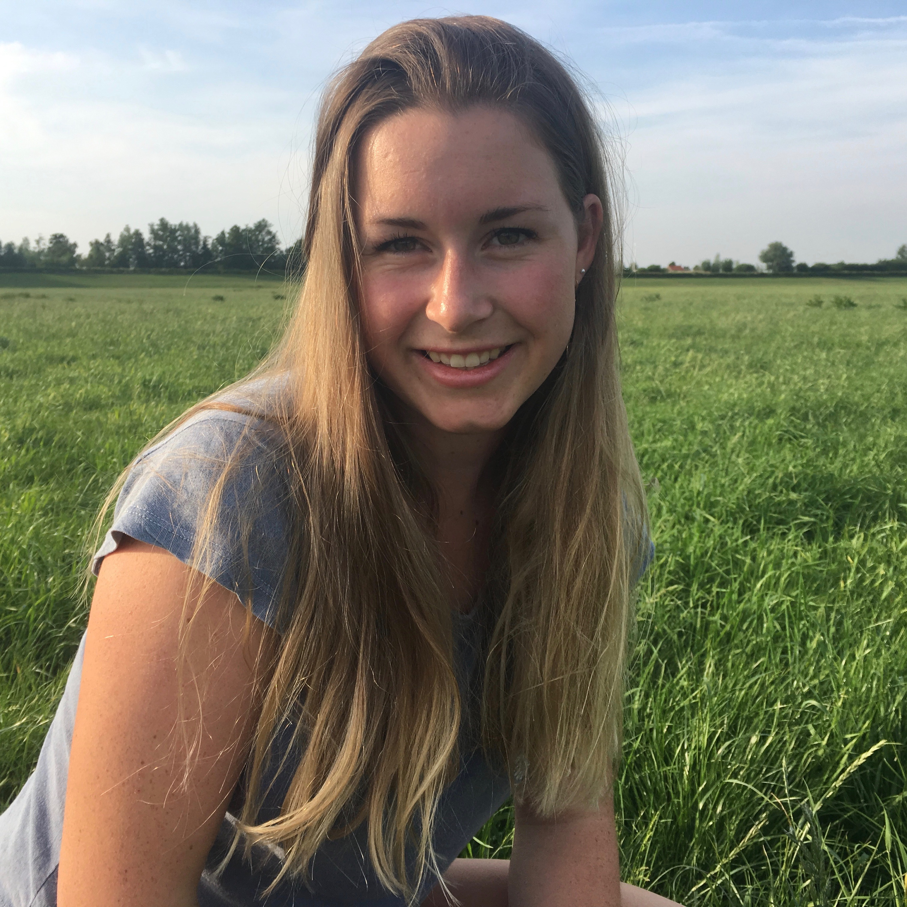

HCI Portfolio
Maartje Pont

Hi, mijn naam is Maartje Pont en ik studeer Communication and Multimedia Design aan De Haagse Hogeschool.
In mijn vrije tijd ben ik graag bezig met sport of doe ik leuke dingen met vrienden. Daarnaast breng ik graag tijd door met mijn hond Baco.
Momenteel zit ik in het tweede leerjaar en zal ik mij onder andere richten op het vak HCI. Ik verwacht dat ik veel nieuwe en innovatieve vaardigheden zal leren en hoop dat ik deze later zal kunnen inzetten in mijn carrière. Ik zou graag meer kennis willen vergaren van en ervaring willen opdoen met de aangeboden technieken zoals AR en wearables.